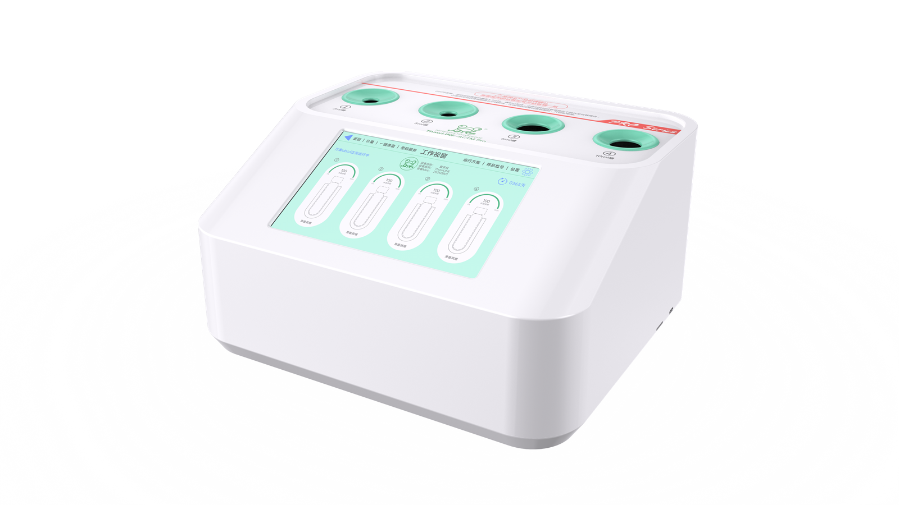

三级权限
管理员 - 主管 - 操作员三级权限体系，管理员统筹账户密码管理，搭配密码周期设置，各级角色权限边界明确，分级授权适配实验室规范化管理需求，保障设备操作安全合规，让实验流程有序可控。

FUNCTIONS
管理员 - 主管 - 操作员三级权限体系，管理员统筹账户密码管理，搭配密码周期设置，各级角色权限边界明确，分级授权适配实验室规范化管理需求，保障设备操作安全合规，让实验流程有序可控。
管理员 - 主管 - 操作员三级权限体系，管理员统筹账户密码管理，搭配密码周期设置，各级角色权限边界明确，分级授权适配实验室规范化管理需求，保障设备操作安全合规，让实验流程有序可控。
用户可根据样本容量、冻存液类型自由调节冰晶参数，复苏后残留冰晶以 5%~15% 为最佳，适配不同实验需求，提升细胞活率。
一键启动臭氧杀菌功能，高效杀灭细菌、病毒，30 秒快速完成消毒，为细胞复苏实验的准确性提供全方位保护。
支持将预热温度、保护温度、冰晶参数等自定义配置保存为运行方案，可命名、删除、一键启用，无需重复设置，标准化操作流程，提升实验效率与结果一致性。
设备支持蓝牙打印，连接配套设备，实时输出复苏流程的时间、温度、样本批号等关键数据；纸质记录便捷留存，兼顾数据溯源与管理效率。
主管账号可自主修改自身密码，同时统一管理多名操作员密码；操作员账号仅支持修改本人密码，权限划分清晰，操作流程直观简洁，既适配实验室角色分工需求，又保障密码管理的安全与灵活。
支持直接连接电脑导出实验数据，无需复杂中转步骤，数据实时同步至电脑端，便于后期深度分析、规范归档与成果追溯，操作简单高效，契合实验数据管理需求。
SD 卡需在仪器关机状态下插入（不支持热插拔），开机后自动启动数据记录，全程无需手动干预，实验数据实时留存；后续数据自动备份，数据存储安全无遗漏，便于后续整理归档，适配实验数据便捷且稳妥的存储需求。
支持自由设定保护温度（-40°C~0°C），设备不启动时自动维持样本安全温度，若复苏样本温度高于设定值则设备不启动，从源头规避温度异常对样本的损伤，全方位保障细胞活性与实验安全性。
支持四个槽口样品批号单独设置，每个样本对应专属标识，便于实验过程中快速识别、追踪与管理，确保多样本并行实验时数据可追溯，契合实验室规范化操作要求。
简约防尘盖设计，轻轻一盖即可实现全方位防尘保护，减少设备清洁频次，延长使用寿命，操作无需繁琐步骤。
无水化自动解冻技术，只需将样本放入对应槽口即可启动复苏，彻底减少污染风险，保障样本纯度，让实验流程更洁净高效。四通道独立槽口同步工作，可同时复苏四支不同样本，无需分批操作，大幅提升实验效率。
显示屏四通道独立显示，可实时观察样本复苏状态。
支持温度校准，操作流程简洁，校准完成后设备性能稳定，有效降低实验误差，保障实验结果的可靠性与重复性。
可根据样本容器类型（冻存管、西林瓶、冻存瓶等）定制不同规格复苏口，覆盖多种样本容量，全面适配各类实验需求。